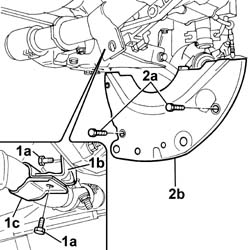
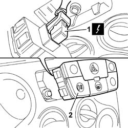
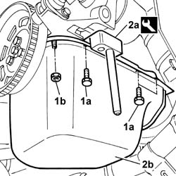
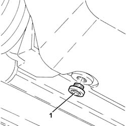
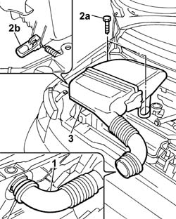
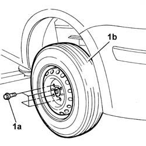

1020A20 CRANK CASE OIL SUMP - R + R CLEAN SEALS FOR SEALANT APPLICATION
- Path
- Procedures > 10 ENGINE UNIT > 1020 CRANKCASE SUMP AND COVERS > 1020A CRANK CASE OIL SUMP > 1020A20 CRANK CASE OIL SUMP - R + R CLEAN SEALS FOR SEALANT APPLICATION
- Kind
- repair procedure (removal / refitting; the operation number is the code)
- Applies to
- all engines; all production periods
- Interactive page
- https://sloeber94.github.io/elrnDB-fPnd/en/#/2752422
Applies to: engines: 1.1; all production periods
 Removing
Removing
 Refitting
Refitting
Applies to: engines: 1.1; all production periods

Applies to: engines: 1.2 8v; all production periods
Removing
RefittingPosition the vehicle on a lift.
Raise the vehicle.
Position a suitable container for collecting the engine oil.
Op. 7055B54 UNDER-ENGINE GUARD - R R
Unscrew the engine oil sump drain plug and drain the lubrication system.
1. Undo the fixing bolts (1a) and remove bracket (1b) and release bracket (1c).
2. Unscrew the fixing bolts (2a) and remove the engine flywheel guard (2b).
Applies to: engines: 1.2 8v; all production periods
1. Undo the bolts (1a) and the nuts (1b) fixing the engine oil sump.
2. Use the tool (2a), cut the bead of sealant between the oil sump and the crankcase and remove the enigne oil sump (2b).
Description | Code | |
|---|---|---|
2a | Blade | 1.870.718.000 |

Applies to: engines: 1.2 8v; all production periods
Refitting
RemovingClean the surfaces of the oil sump and the engine crankcase thoroughly completely removing the remaining sealant.
Apply silicon sealant to the entire perimeter of the oil sump.
Place the crankcase sump in its housing without axial movements and secure it using the nuts and bolts.
Fastening | Component | Ø | Value (daNm) | |
|---|---|---|---|---|
- | Bolt | CAM COVER | M6 X 1 | 1 |
Fit the engine flywheel guard and tighten the fixing bolts.
Fit the exhaust mounting bracket and tighten the fixing bolts.
Fastening | Component | Ø | Value (daNm) | |
|---|---|---|---|---|
- | Bolt | EXHAUST PIPE MOUNTS/FASTENERS | M10 X 1.25 | 5 |
Fastening | Component | Ø | Value (daNm) | |
|---|---|---|---|---|
- | Bolt | EXHAUST PIPE MOUNTS/FASTENERS | M8 | 2.5 |
Op. 7055B54 UNDER-ENGINE GUARD - R R
Lower the vehicle.
Applies to: engines: 1.3 JTD 16v; all production periods
Removing
Refitting
Applies to: engines: 1.3 JTD 16v; all production periods

Applies to: engines: 1.3 JTD 16v; all production periods
Refitting
Removing
Applies to: engines: 1.3 JTD 16v; all production periods

Applies to: engines: 1.3 JTD 16v; all production periods

Topics linked from this page (2)
Topics that link to this page (12)
- 1020A26 CRANKCASE SUMP - R R CLEAN MATING SURFACES AND APPLY SEALANT FOR VEHICLE WITH AIR CONDITIONER
- 1020B12 CHAIN-DRIVE VALVE GEAR COVER - R.R. AND GASKET REPLACEMENT FOR MODELS WITH AIR-CONDITIONER
- 1020D14 FRONT CRANK SHAFT OIL SEAL COVER - R + R AND REPLACE SEALS FOR VERSIONS WITH OIL PUMP ON CRANK SHAFT, TIMING SIDE
- 1020D30 oil seal cover, fly wheel side - r + r and replace seals
- 1028H20 piston with connecting rod - r r
- 1032A12 CHAIN AND GEARS for timing system - R.R. for timing or Replacement.
- 1032B47 toothed drive pulley - r r for versions with air conditioner
- 1032B62 a/c duct pulley - r r
- 1032C40 Timing CHAIN TENSIONER PLATE - R.R.
- 1084B16 engine oil pump - r+r vehicles with a/c
- 1084B26 emgine oil intake duct - r r
- 1084B45 RIGID air supply PIPE between air-air heat exchanger and intermediate hose - R.R.